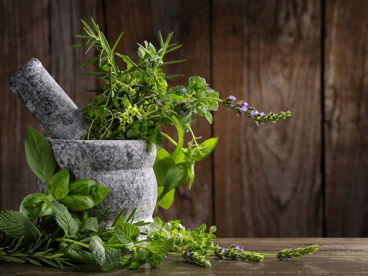

Jei prie namų neturite daržo ar gyvenate bute ir nuolat norite pagardinti patiekalus šviežiais ir kvepiančiais prieskoniais, jums pats laikas pradėti auginti savo mini daržiuką. Žaliuojantys prieskoniai ant palangės pamalonins ne tik jūsų skrandį. Nuostabi žalia spalva juk nuteikia pozityviai bei padeda atsipalaiduoti.
Prieskonių auginimas. Geriausia prieskoniams būtų parinkti labiausiai saulėtą palangę. Dažniausiai tai būna pietinis arba vakarinis langas. Rekomenduojama, kad dieną temperatūra augalams būtų apie 15–20°C, naktį ji gali nukristi iki 5°C. Svarbu, kad augalėliai gautų gryno oro, todėl kaip galima dažniau atverkite jiems langą, tik saugokite nuo skersvėjų ir žvarbaus vėjo gūsių.
Indas turėtų būti apie 10–15 centimetrų aukščio. Indo apačioje dedamas drenažinis sluoksnis iš stambiagrūdžio žvyro ar duženų (apie 2–3 centimetrai). Naudojamos kokybiškas sijotas ir dezinfekuotas gruntas ir kompostas. Dauguma prieskoninių žolių mėgsta purią žemę, todėl į gruntą pridedama sijoto smėlio. Geriausia proporcija – lygiomis dalimis žemės, komposto, smėlio mišinys.
Priklausomai nuo rūšies, prieskoninės žolelės ir augalai sudygsta per 2–7 dienas.
Augimo procese žiedus geriausia nuskabyti.
Jei norite ilgiau džiaugtis prieskoniais, vos užsimezgusius žiedelius nukirpkite.
Augalas daug maistinių medžiagų atiduoda žiedams, todėl lapeliai gali sunykti ir prarasti skonines savybes. Draugiškus prieskonius galite sodinti į ilgesnį lovelį ar platų vazoną, vaizdas ir kompozicija bus žavingi.
Prieskonių draugystė
Ne visi prieskoniai gerai „sutaria“ augdami viename vazone, todėl geriau kartu sodinkite tuos augalus, kurie „nesipeša“. Pavyzdžiui, česnako laiškai geriau auga kartu su petražolėmis. Gerai „sutaria“ rozmarinas ir šalavijas, rozmarinas ir lauras, čiobrelis ir raudonėlis. Baziliką patartina auginti atskirai nuo kitų prieskonių.
Prieskoniai, kurie tinkami auginti ant palangės
Bazilikas – vienmetis, tačiau pakankamai ilgai derlių duodantis augalas. Šie augalai turėtų būti laistomi dažnai, nes per stambius plačius lapus greitai išgarina drėgmę. Bazilikas puikiai tinka patiekalams į kurių sudėtį įeina pomidorai, salotoms, dažnai naudojamas gaminant italų virtuvės patiekalus, dera su česnakais ir petražolėmis.
Melisai parenkama saulėta, šilta ir nuo vėjo apsaugota vieta. Vienoje vietoje gali augti iki 10 metų. Švieži lapeliai praturtina salotas, padažus, daržoves, visų rušių sriubas, naudojama gaminant paukštienos ir žuvų patiekalus. Puikiai tiks ruošiant veršieną, kiaulieną, avieną ir laukinių žvėrių mėsą, pieniškus ir kiaušinių patiekalus, žirnių ir bulvių sriubas. Šį prieskonį rekomenduojama ne kaitinti, o pridėti į paruoštus patiekalus.

Raudonėlis puikiai tinka kaip prieskonis salotose, bulviniuose, pupelių, mėsos patiekaluose, marinuojant ir rauginant agurkus. Suteikia kvapą rūkytiems gaminiams, dešroms, girai. Nesigailėsite įdėję raudonėlį į jūros gėrybių patiekalus, guliašą, kiaušinių patiekalus. Puikiai dera su kitais prieskoniais, ypač su juodaisiais pipirais, baziliku ir mairūnu. Plačiai naudojamas medicinoje gerinti virškinimą, šlapinimasi ir prakaitavimą, skatina atsikosėjimą. Veikia kaip skausmą malšinanti priemonė, nervų sistemos raminančioji priemonė, kraujavimą stabdanti, dezodoruojanti priemonė. Padeda nuo bronchito, inkstų ligų, kepenų uždegimų, reumato, paralyžiaus, dusulio problemų.
Rozmarinas puikiai tiks paskaninti mėsos ir žuvies patiekalus, salotas, aromatizuos arbatą. Naudojamas padažuose, sriubose, marinatuose. Kaip vaistažolė padeda nuo nervozių, galvos svaigimo, prostatito, astmos, bronchito, viršutinių kvėpavimo takų uždegimo.
Mairūnai naudojami bulvių sriubai, salotoms, grybų patiekalams, mėsiškoms sriuboms, kepant paukštieną, žuvies salotose, kai kuriuose sūriuose. Konservuojant agurkus ir pomidorus jis suteiks pikantišką skonį. Naudojamas grietinės, pomidorų padažuose.
Petražolė – dvimetis augalas, vieną kartą išauginę turėsite šviežių petražolės šakelių porą metų. Priežiūra paprasta, augalas nėra lepus, tačiau norėdami gausaus derliaus reikia pakankamai laistyti ir tręšti.
Čiobrelis – daugiametis, nelepus augalas. Sėkmingai buvo “prikeltas” po to kai atrodė nudžiuvęs. Naudojamas arbatoms gaminti, kaip prieskonis įvairiems mėsiškiems patiekalams, dažnai sutinkamas prancūzų bei italų virtuvės patiekaluose, nuostabiai tinka pagardinti orkaitėje apkepamam varškės sūriui su medumi ir čili. Prieskoniams ir arbatoms vartojamos čiobrelių šakelės su lapeliais.
